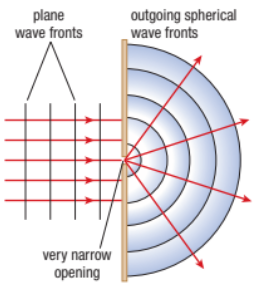
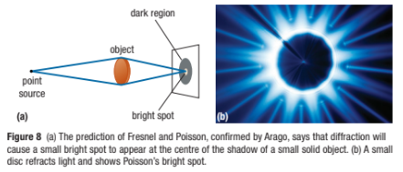

Interference of Light Waves: Young’s Double-Slit Experiment
Young’s Double-Slit Experiment
Young's double slit experiment. Here, pure-wavelength light sent through a pair of vertical slits is diffracted into a pattern on the screen of numerous vertical lines spread out horizontally. Without diffraction and interference, the light would simply make two lines on the screen.

When monochromatic light, such as laser light, passes through the slits of an experiment setup, the laser light hits the screen on the right producing an interference pattern. This arrangement satisfies the general conditions required to create wave interference:
The interfering waves travel through different regions of space. The waves come together at a common point where they interfere. The waves are coherent.
When the two slits in the double-slit setup are both very narrow, each slit acts as a simple point source of new light waves, and the outgoing waves from each slit are like the simple spherical waves in Figure 4.

Interference fringe is one of a series of alternating light and dark regions that result from the interference of waves.

Watch this video:
Practice
Calculate the wavelength of the monochromatic light that produces a fifth-order dark fringe at an angle of 3.88 with a slit separation of 0.042 mm. Show your computation.
More Developments in the Theory of Light
Young’s evidence for the wave nature of light was not accepted by the scientific community until 1818 when Augustin Fresnel proposed his own wave theory, complete with mathematics.

A mathematician named Simon Poisson showed how Fresnel’s equations predicted a unique diffraction pattern when light is projected past a small solid object.

Poisson’s argument was that, if light behaved as a wave, then the light diffracting around the edges of the disc should interfere constructively to produce a bright spot at the center of the diffraction pattern.

This was impossible according to the particle theory of light. In 1818, Poisson’s prediction was tested experimentally by Dominique Arago, and, to many people’s surprise, he successfully observed the bright spot.